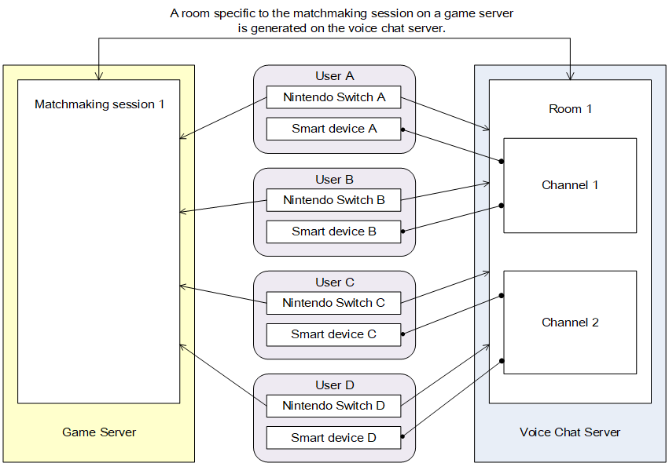

2. Matchmaking Voice Chat
2.1. Introduction
2.1.1. About Matchmaking Voice Chat
Matchmaking Voice Chat is a feature for using a Nintendo Switch Online app that runs on smart devices to link up with Nintendo Switch applications and provide voice chat with other players participating in a matchmaking session.
Matchmaking Voice Chat uses a voice chat server that is independent from the game server. A room is created on the voice chat server as a gathering point for users who participate in the voice chat. After joining a matchmaking session in a Nintendo Switch application, join the room corresponding to the matchmaking session to enable voice chat in the Nintendo Switch Online application.
A group that participates in voice chat in the same room is called a channel. If users are divided into teams within the matchmaking session, you can join voice chat for each team by changing the channel. Channels can be changed from the Nintendo Switch application.
Matchmaking Voice Chat can also be used by the independent servers matchmaking feature instead of the NEX matchmaking feature.
Matchmaking Voice Chat is a service that requires Nintendo Switch Online membership. For an overview of Nintendo Switch Online, see the Nintendo Switch Overview. For more information about supporting Nintendo Switch Online when developing Nintendo Switch applications, see the Nintendo Switch Online Play Guide in addition to this document.
2.1.2. Matchmaking Voice Chat Process Flow
Matchmaking Voice Chat has the following process flow.
- Initialize NEX. (2. NEX Initialization and Finalization)
- Log in to the game server.
- Initialize the service client. (2.2.)
- Join the a matchmaking session on the Nintendo Switch. (2.3.)
- Join a room on the Nintendo Switch. Voice chat becomes available on smart devices. (2.4.)
- Play together online. If players are divided into teams for voice chat during online play, change the voice chat channel as required. (2.6.)
- Leave the room on the Nintendo Switch. End voice chat on the smart device. (2.5.)
- Leave the matchmaking session on the Nintendo Switch.
- Finalize the service client. Alternatively, return to step 4.
Figure 2.1 shows the relationship between the voice chat server's rooms, channels, and the game server's matchmaking session.

Figure 2.1. Relationship Between Rooms, Channels, and Matchmaking Sessions
Matchmaking sessions are managed on the game server. A room is generated on the voice chat server that corresponds to the matchmaking session. One room is created for one matchmaking session.
One or more channels exist in one room. The smart device connects to one of these channels. On the smart device, you can only converse with users who are connected to the same channel. In the preceding figure, users A and B can converse with each other, and users C and D can converse with each other. However, users A and C, for example, cannot converse with each other. By changing the connected channel, you can divide members in the same room into groups for voice chat.
2.1.3. Determining Nintendo Switch Online Membership
When the SmartDeviceVoiceChatClient asynchronous function is called, the voice chat server determines whether the user has a Nintendo Switch Online membership. If it determines that the user is not a member of Nintendo Switch Online and the service is unavailable, QERROR(SmartDeviceVoiceChat, NetworkServiceLicenseRequired) is returned as the result of the SmartDeviceVoiceChatClient asynchronous function.
For more information about handling this error, see 2.9.2.1. QERROR(SmartDeviceVoiceChat, NetworkServiceLicenseRequired).
2.1.4 Timeout Settings for Asynchronous Function Calls
The relevant asynchronous processing does not return a response for a long time when the SmartDeviceVoiceChatClient asynchronous function is called when communication with the voice chat server is not possible. Nintendo recommends setting a timeout on the order of ten seconds for the call context using CallContext::SetTimeout() when calling the SmartDeviceVoiceChatClient asynchronous function because there is normally a response within ten seconds from the voice chat server.
2.2. Initializing and Finalizing a Service Client
The service client used for Matchmaking Voice Chat is SmartDeviceVoiceChatClient.
To initialize the service client, use the SmartDeviceVoiceChatClient::SetUserHandle() function to set the user handle for the user in an open state using the voice chat, after the SmartDeviceVoiceChatClient instance is generated. For more information about getting user handles, see account Library in NintendoSDK Documents. User handles must be set before calling any of the asynchronous functions for the SmartDeviceVoiceChatClient class. In addition, this user handle must be valid while the SmartDeviceVoiceChatClient class instance exists.
Destroy the SmartDeviceVoiceChatClient instance to finalize the service client.
// Log in to the game server.
LoginGameServer(pNgsFacade);
// Create a ServiceClient instance for each login attempt.
SmartDeviceVoiceChatClient* pClient = new SmartDeviceVoiceChat();
// Gets and sets the user handle.
// For more information about the specific method for getting user handles, see account Library in NintendoSDK Documents.
nn::account::UserHandle* pUserHandle = GetUserHanedle();
pClient->SetUserHandle(pUserHandle);
// Do the processing.
pClient->DoSomething();
// Destroy the object before logout.
delete pClient;
// Log out.
LogoutGameServer(pNgsFacade);
2.3. Joining a Matchmaking Session
To join Matchmaking Voice Chat, a user must first join a session for user gatherings on the server before starting voice chat. When using the NEX matchmaking feature, joining a matchmaking session is equivalent to this requirement. In addition, the independent server matchmaking feature can be used in place of the NEX matchmaking feature by satisfying the following session specifications.
2.3.1. Using the NEX Matchmaking Feature
When using the NEX matchmaking feature, see 4. Matchmaking for more information about joining a matchmaking session.
When using Matchmaking Voice Chat, there are no restrictions on the method for joining matchmaking sessions. Any of the methods described in the matchmaking documentation may be used.
2.3.2. Using the Independent Server Matchmaking Feature
Matchmaking Voice Chat can be used with the matchmaking feature implemented on an independent server in place of the NEX matchmaking feature.
To join a Matchmaking Voice Chat room, the matchmaking features on the independent server must satisfy the following specifications.
- It is possible to use an unsigned 32-bit integer ID to identify a session created by the matchmaking feature.
- The Nintendo Switch application can get the ID for the session it is currently participating in.
For more information about session IDs, see 2.4. Joining Rooms.
2.4. Joining Rooms
Use the SmartDeviceVoiceChatClient::JoinRoom() function to join a room. This function passes detailed information for the participating matchmaking session, such as the ID or game mode.
Use SmartDeviceVoiceChatJoinRoomParam to specify the parameters for joining rooms. Table 2.1 describes the available parameters.
| Item Name | Overview | Initial Value | Function Used |
|---|---|---|---|
| Session ID | ID for the session the local host is participating in. To use the NEX matchmaking feature, set the gathering ID. When using the matchmaking feature on an independent server, set an ID value as an unsigned 32-bit integer to uniquely identify the session the local host is participating in. |
0 | SetSessionId() |
| Game mode. | The value representing the matchmaking mode. Sets the game mode value for the session the local host is participating in. This value does not need to be explicitly set when using the matchmaking feature on an independent server, if there is no game mode like the mode in the NEX matchmaking feature. |
0 | SetGameMode() |
| Channel | Specifies the channel to connect to when starting voice chat. | SmartDeviceVoiceChatConstants:: |
SetChannelID() |
Note:
Nintendo Switch consoles that specify the same session ID with SmartDeviceVoiceChatClient::JoinRoom() join the same room. Make sure that the maximum number of users that can join one room does not exceed the value requested and approved in OMAS. Also note that the session ID value is unique regardless of the game mode when using the matchmaking feature on an independent server.
When asynchronous processing succeeds, the room ID of the room that was joined is set to the SmartDeviceVoiceChatJoinRoomResult object. The room that is joined is determined by the voice chat server based on the session ID set to SmartDeviceVoiceChatJoinRoomParam. The Nintendo Switch does not need to handle creating or selecting rooms.
After the user joins a room, the voice chat features on the smart device become available, and voice chat begins when the user performs the operation for starting voice chat. The Nintendo Switch application cannot determine whether the user has started voice chat on the smart device application.
After joining the room, periodic communication with the voice chat server occurs internally within SmartDeviceVoiceChatClient. This periodic communication is called the heartbeat. The heartbeat is for the voice chat server to detect when communication with the Nintendo Switch is disconnected, and stops if you either call the SmartDeviceVoiceChatClient::LeaveRoom() function or destroy the SmartDeviceVoiceChatClient class instance. Either call the SmartDeviceVoiceChatClient::LeaveRoom() function or destroy the SmartDeviceVoiceChatClient class instance to stop the heartbeat when terminating online play because Nintendo Switch application communication has been interrupted, or when logging out from the game server.
2.5. Leaving a Room
Use SmartDeviceVoiceChatClient::LeaveRoom() to leave a room.
Pass SmartDeviceVoiceChatLeaveRoomParam as the argument for this function. Table 2.2 describes the parameters to set.
| Item Name | Overview | Initial Value | Function Used |
|---|---|---|---|
| Room ID | Specifies the ID of the room that the local host is participating in. | 0 | SetRoomId() |
Call this function to execute the processing on the voice chat server for leaving the room. After leaving is complete, the smart device is in a state where it is waiting for voice chat to terminate. In this state, the user can continue to use voice chat for a period of time. Voice chat ends when either that period has passed, or when the user performs the operation for ending voice chat on the smart device.
In addition, calling SmartDeviceVoiceChatClient::LeaveRoom() stops the heartbeat regardless of whether the function is successful. The voice chat server also performs leaving processing if it detects a timeout for the heartbeat, not only when there is an explicit request from the Nintendo Switch. The process for leaving the room is executed regardless of whether asynchronous processing succeeds, so the application does not need to perform handling for the asynchronous processing results of this function. For this reason, we recommend using an overload function that does not take a pointer to the CallContext object as its argument when leaving a room.
Note:
If you destroy the SmartDeviceVoiceChatClient instance immediately after calling SmartDeviceVoiceChatClient::LeaveRoom(), the asynchronous processing is canceled while in progress. The heartbeat will also stop in this instance, so ultimately any leaving will occur on the voice chat server.
However, there is a time lag until the heartbeat timeout is detected, so this method takes more time to terminate voice chat than the standard leaving process.
If you wait for the asynchronous processing to complete to avoid this issue, use an overload function that takes a pointer to the CallContext object as its argument.
Notes
The heartbeat stops and processing to leave the room occurs when the voice chat server detects the heartbeat timeout. This happens in cases when an application stops or ends while participating in a room.
It is still possible for voice chat to occur on a smart device because leaving does not occur in the interval between the application's stopping and the detection of the heartbeat timeout.
2.6. Changing Voice Chat Channels
If you want to set up voice chat for only some of the participants in a room, such as dividing users into teams in a matchmaking session for online play, use the SmartDeviceVoiceChatClient::ChangeVoiceChatChannel() function to change the channel. The SmartDeviceVoiceChatChangeVoiceChatChannelParam object is passed to this function. Table 2.3 describes the parameters specified by SmartDeviceVoiceChatChangeVoiceChatChannelParam.
| Item Name | Overview | Initial Value | Function Used |
|---|---|---|---|
| Room ID | Specifies the room ID of the room that the local host is participating in. | 0 | SetRoomId() |
| Channel ID | Specifies the channel to change. | SmartDeviceVoiceChatConstants:: |
SetChannelId() |
If you are dividing users into teams, specify a value other than SmartDeviceVoiceChatConstants::DEFAULT_CHANNELID as the channel ID. If you specify a value other than SmartDeviceVoiceChatConstants::DEFAULT_CHANNELID as the channel ID, the information that voice chat teams are being divided is displayed on the smart device.
If the asynchronous processing succeeds, the voice chat channel on the smart device changes. When changing the voice chat channel, it may take some time after the voice chat server accepts the request until it is actually available from the smart device.
2.7. Checking Whether Voice Chat Is Available
If a user that has not previously logged in to the Nintendo Switch Online application calls the SmartDeviceVoiceChatClient::JoinRoom() function, QERROR(SmartDeviceVoiceChat, UserNotFound) is returned as the asynchronous processing result, and the user cannot start voice chat.
Before calling SmartDeviceVoiceChatClient::JoinRoom(), use the SmartDeviceVoiceChatClient::GetAvailability() function to check that QERROR(SmartDeviceVoiceChat, UserNotFound) does not occur with the applicable user. This function passes a pointer to the Boolean variable that receives the result for determining whether voice chat is available.
If the asynchronous processing succeeds and the applicable user is eligible for voice chat, true is returned for the Boolean variable that determines whether voice chat is available. If the user has not logged in to the Nintendo Switch Online application, the function returns false.
2.8. Nintendo Switch Online Application Guide
To describe voice chat to users, you can use the SmartDeviceVoiceChatClient::ShowAppPage() function to display the Nintendo Switch Online application guide page in the web applet.
Use SmartDeviceVoiceChatShowAppPageParam to pass parameters for this function. The parameter required for configuration is the user handle for the user using Matchmaking Voice Chat.
The user operation results from the web applet are set to SmartDeviceVoiceChatShowAppPageResult.
The SmartDeviceVoicechatClient::ShowAppPage() function is available in synchronous and asynchronous versions.
When the synchronous function is called, processing for the thread is blocked while the web applet is displayed. The user operation results are returned as the return value of the function. Depending on the NEX thread mode, the user may be logged out from the game server unless dispatch processing is executed periodically in a different thread, even when this function is running ( 5.2. Overview of Dispatch Processing). Also note that when using the NEX function from multiple threads, you must use a thread-safe memory allocator (3. Memory Management).
When using an asynchronous function, a pointer to the SmartDeviceVoiceChatShowAppPageResult object that receives the operation results is specified in addition to the parameters. Call this function to signal CallContext when the user closes the web applet. Because the time until this event is signaled depends on user operations, it is not possible to set a timeout for CallContext or cancel the process.
Note:
If the Nintendo Switch Online voice chat service is terminated, information indicating that it was terminated is displayed in the web applet that appears, using the SmartDeviceVoiceChatClient::ShowAppPage() function.
2.9. Error Handling
If an error occurred due to calling a SmartDeviceVoiceChatClient function, voice chat is not available but online play can be continued because the voice chat server is independent from the game server. In this case, the application may either continue online play without voice chat, or end online play. Implement the application to allow online play even when voice chat is unavailable, such as by disabling voice chat in advance.
2.9.1. Errors During Function Calls
If you call a function and it returns an error without starting asynchronous processing, there may have been a programming error. Verify whether initialization was performed correctly.
2.9.2. Asynchronous Processing Errors
You can get asynchronous processing results with the CallContext::GetOutcome() function. The API Reference describes errors that the application must handle for each function.
When an unlisted error occurs, use the qResult::GetNnResult() function to get nn::Result, or qResult::GetErrorCodeStruct() to get the error code and pass it to the error viewer applet. You can also indicate to the user in the application UI that voice chat is unavailable, instead of passing the error viewer applet results.
SmartDeviceVoiceChatClient client;
CallContext context;
client.SetUserHandle(pUserHandle); // pUserHandle is a pointer to the opened user handle.
// Call asynchronous processing. Arguments other than context are omitted.
// In cases where the asynchronous processing returns false, either context is being used by another asynchronous process,
// or the user handle has not been configured. Both situations are the result of a programming error.
// As long as the user handle is already generated and a newly created CallContext is passed, error handling is not required.
client.JoinRoom(&context, ...);
context.Wait(); // Blocks here, and waits for the asynchronous processing to complete.
if(context.GetState() != CallContext::CallSuccess)
{
switch (context.GetOutcome().GetReturnCode())
{
// If an error occurs that the application needs to handle, perform the required processing in the application.
case QERROR(SmartDeviceVoiceChat, UserNotFound):
// User that has not previously logged in to the Nintendo Switch Online application.
// Informs the user that the Nintendo Switch Online application is required for using voice chat.
break;
case QERROR(SmartDeviceVoiceChat, AccountLibraryError):
// Error that occurred in the account library API.
break;
case QERROR(SmartDeviceVoiceChat, NetworkServiceLicenseRequired):
// No Nintendo Switch Online membership.
break;
default:
{
// Cases where there is an unintended error in the application.
u32 code = ErrorCodeConverter::ConvertToNetworkErrorCode(result);
nn::err::ErrorCode errorCode = result.GetErrorCodeStruct();
// Start the error viewer applet.
nn::err::ShowError(errorCode);
}
}
}
Table 2.4 describes errorErrors that may occur during Matchmaking Voice Chat. This table excludes shared errors that occur during NEX communication, and so on.
| ReturnCode Value | Overview |
|---|---|
| QERROR(SmartDeviceVoiceChat, Unknown) | Unknown error. This return code may occur when an unexpected error occurs. |
| QERROR(SmartDeviceVoiceChat, InvalidArgument) | The argument is invalid. |
| QERROR(SmartDeviceVoiceChat, InvalidResponse) | Failed to parse the response from the voice chat server. |
| QERROR(SmartDeviceVoiceChat, InvalidAccessToken) | An access token error for the voice chat server occurred twice in a row. For example, if an error indicating that the token has expired occurs, the library tries to get the token again once. If a token is obtained normally with this second attempt, this error does not occur. |
| QERROR(SmartDeviceVoiceChat, Unauthorized) | Authentication error. |
| QERROR(SmartDeviceVoiceChat, AccessError) | Access error. |
| QERROR(SmartDeviceVoiceChat, UserNotFound) | A user who has not logged in to Nintendo Switch Online attempted to use Matchmaking Voice Chat. The application must handle this error. |
| QERROR(SmartDeviceVoiceChat, RoomNotFound) | The specified room does not exist. |
| QERROR(SmartDeviceVoiceChat, RoomNotActivated) | The specified room is invalid. |
| QERROR(SmartDeviceVoiceChat, ApplicationNotSupported) | This application is not supported. This error occurs when request to use this feature has not been made in OMAS. |
| QERROR(SmartDeviceVoiceChat, InternalServerError) | Internal error in the voice chat server. |
| QERROR(SmartDeviceVoiceChat, ServiceUnavailable) | The service is unavailable. |
| QERROR(SmartDeviceVoiceChat, UnexpectedError) | An unexpected error occurred. |
| QERROR(SmartDeviceVoiceChat, UnderMaintenance) | The voice chat server is undergoing maintenance. |
| QERROR(SmartDeviceVoiceChat, ServiceNoLongerAvailable) | The Nintendo Switch Online voice chat service has ended. |
| QERROR(SmartDeviceVoiceChat, AccountTemporarilyDisabled) | The Nintendo Switch Online voice chat service has been temporarily disabled for this account. (Penalty from reporting.) |
| QERROR(SmartDeviceVoiceChat, PermissionDenied) | Access from an account that does not have a license for the specified Application ID. This error only occurs in the development environment. |
| QERROR(SmartDeviceVoiceChat, NetworkServiceLicenseRequired) | No permissions to use the network service. The application must handle this error. |
| QERROR(SmartDeviceVoiceChat, AccountLibraryError) | Although an error occurred in the account library, processing continued without handling the error appropriately. The application must handle this error. |
| QERROR(SmartDeviceVoiceChat, GameModeNotFound) | The specified game mode is not registered in the voice chat server. This error is caused by an implementation error. |
2.9.2.1. QERROR(SmartDeviceVoiceChat, NetworkServiceLicenseRequired)
If the SmartDeviceVoiceChatClient API is called and determines that the user is not subscribed to Nintendo Switch Online, QERROR(SmartDeviceVoiceChat, NetworkServiceLicenseRequired) is returned.
In this case, have the application call the nn::account::ShowLicenseRequirementsForNetworkService() function and notify the user that Nintendo Switch Online membership is required. This API is available in NintendoSDK NX Add-On 4.4.0 and later.
For more information about verifying operation in the development environment, see the Nintendo Switch Online Play Guide.
2.9.2.2. QERROR(SmartDeviceVoiceChat, AccountLibraryError)
If QERROR(SmartDeviceVoiceChat, AccountLibraryError) is returned, have the application use SmartDeviceVoiceChatClient::GetLastAccountNnResult() to get nn::Result, and then perform error handling according to the Error Handling section for the account library in NintendoSDK Documents.
nn::account::ResultTokenCacheUnavailable is handled during asynchronous processing. As a result, the application does not need to handle nn::accountResultTokenCacheUnavailable.